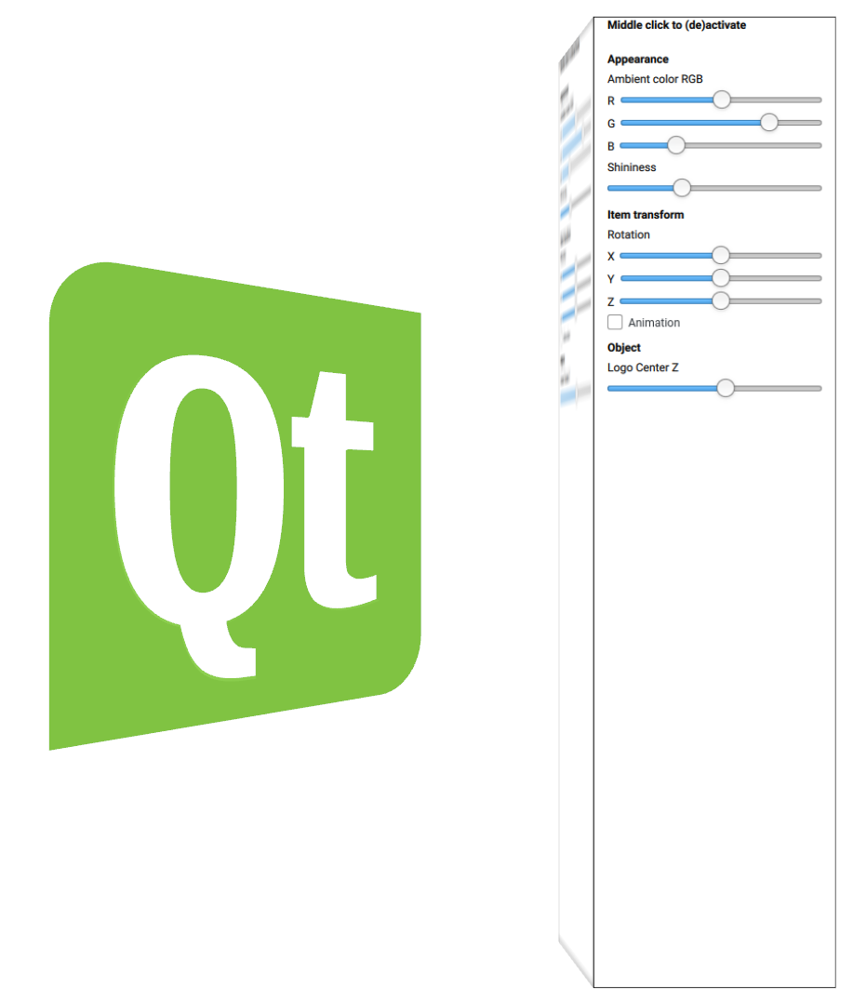

Qt 3D: Scene2D QML Example
A QML application that demonstrates using Qt Quick 2 within a Qt 3D scene.

Scene2D demonstrates rendering a Qt Quick 2 scene into a texture and utilising the texture within a Qt 3D application including handling mouse events. The 3D scene contains a single active camera and renders a 3D Qt logo along with some controls declared with Qt Quick Controls.
Running the Example
To run the example from Qt Creator, open the Welcome mode and select the example from Examples. For more information, visit Building and Running an Example.
Setting up the 3D Scene
We set up the 3D scene in an Entity that acts as the root of the object tree. The virtual camera is specified in main.qml:
Camera {
id: camera
projectionType: CameraLens.PerspectiveProjection
position: Qt.vector3d( 0.0, 0.0, 20 )
}
The RenderSettings specify the rendering algorithm used and also enable triangle based picking which is needed to properly handle mouse events when projecting a Qt Quick scene onto 3D geometry:
RenderSettings {
activeFrameGraph: ForwardRenderer {
camera: camera
clearColor: "white"
}
pickingSettings.pickMethod: PickingSettings.TrianglePicking
},
The 3D Qt logo that will be controlled by the controls in the Qt Quick scene is declared with:
Entity {
id: logoEntity
Transform {
id: logoTransform
scale: 1
translation: Qt.vector3d( 0, 0, logoControls.logoCentreZ )
rotation: fromEulerAngles( logoControls.rotationX,
logoControls.rotationY,
logoControls.rotationZ )
}
Mesh {
id: logoMesh
source: "Qt_logo.obj"
}
PhongMaterial {
id: logoMaterial
diffuse: Qt.rgba( logoControls.colorR/255,
logoControls.colorG/255,
logoControls.colorB/255, 1.0 )
ambient: Qt.rgba( 0.1, 0.1, 0.1, 1.0 )
shininess: logoControls.shininess
}
components: [ logoTransform, logoMesh, logoMaterial ]
}
It simply consists of a Mesh component to load the geometry; a PhongMaterial component to give it a surface appearance, and a Transform component to specify its postion, orientation, and scale. The properties of these components are bound to properties on the logoControls element which we will discuss next.
Rendering Qt Quick into a Texture
We begin by declaring the Entity that will become our control panel. It consists of a CuboidMesh onto which we will place the texture containing a rendering of the Qt Quick scene. In this case we are using a simple cube for the geometry, but we could use any valid 3D geometry as long as it has texture coordinates. The texture coordinates are used for projecting the texture onto the 3D surface, and also for calculating the coordinates of mouse events to be passed to the originating Qt Quick scene.
Entity {
id: cube
components: [cubeTransform, cubeMaterial, cubeMesh, cubePicker]
property real rotationAngle: 0
Transform {
id: cubeTransform
translation: Qt.vector3d(2, 0, 10)
scale3D: Qt.vector3d(1, 4, 1)
rotation: fromAxisAndAngle(Qt.vector3d(0,1,0), cube.rotationAngle)
}
CuboidMesh {
id: cubeMesh
}
We also include an ObjectPicker component so that we can interact with the controls using the mouse:
ObjectPicker {
id: cubePicker
hoverEnabled: true
dragEnabled: true
// Explicitly require a middle click to have the Scene2D grab the mouse
// events from the picker
onPressed: {
if (pick.button === PickEvent.MiddleButton) {
qmlTexture.mouseEnabled = !qmlTexture.mouseEnabled
logoControls.enabled = !logoControls.enabled
}
}
}
For this example we have chosen to use an interaction mechanism whereby you must explicitly middle-click the controls to enable them.
To apply the texture to the mesh, we make use of the built in TextureMaterial:
TextureMaterial {
id: cubeMaterial
texture: offscreenTexture
}
The final remaining piece is how to render the above texture from a Qt Quick scene. This is done with the Scene2D element:
Scene2D {
id: qmlTexture
output: RenderTargetOutput {
attachmentPoint: RenderTargetOutput.Color0
texture: Texture2D {
id: offscreenTexture
width: 256
height: 1024
format: Texture.RGBA8_UNorm
generateMipMaps: true
magnificationFilter: Texture.Linear
minificationFilter: Texture.LinearMipMapLinear
wrapMode {
x: WrapMode.ClampToEdge
y: WrapMode.ClampToEdge
where we have made use of the Texture2D and RenderTargetOutput types to create a destination texture and attach it as the output of the Scene2D renderer.
Next, we tell the Scene2D object which entities may feed it input events and we initially disable the handling of mouse events:
}
}
}
entities: [ cube ]
Finally, we can specify the Qt Quick scene to render by adding a custom QML component as a child to the Scene2D element:
LogoControls {
id: logoControls
width: offscreenTexture.width
height: offscreenTexture.height
}
}
When the mouseEnabled property is set to true by the ObjectPicker, then the Scene2D object will process mouse events from any ObjectPickers attached to the listed entities. In this way, you have the freedom to use the texture generated by the Scene2D object in any way you wish, even on more than one Entity.
The LogoControls.qml file is just a regular Qt Quick 2 scene which in this case also makes use of the Qt Quick Controls components.